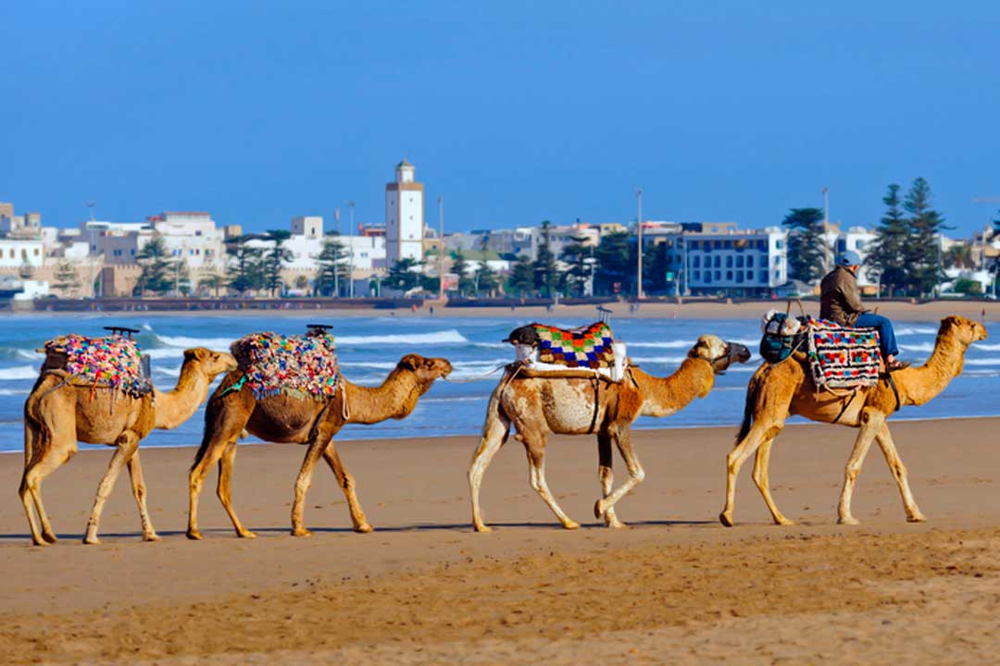
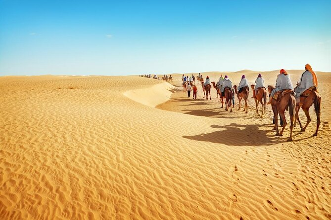
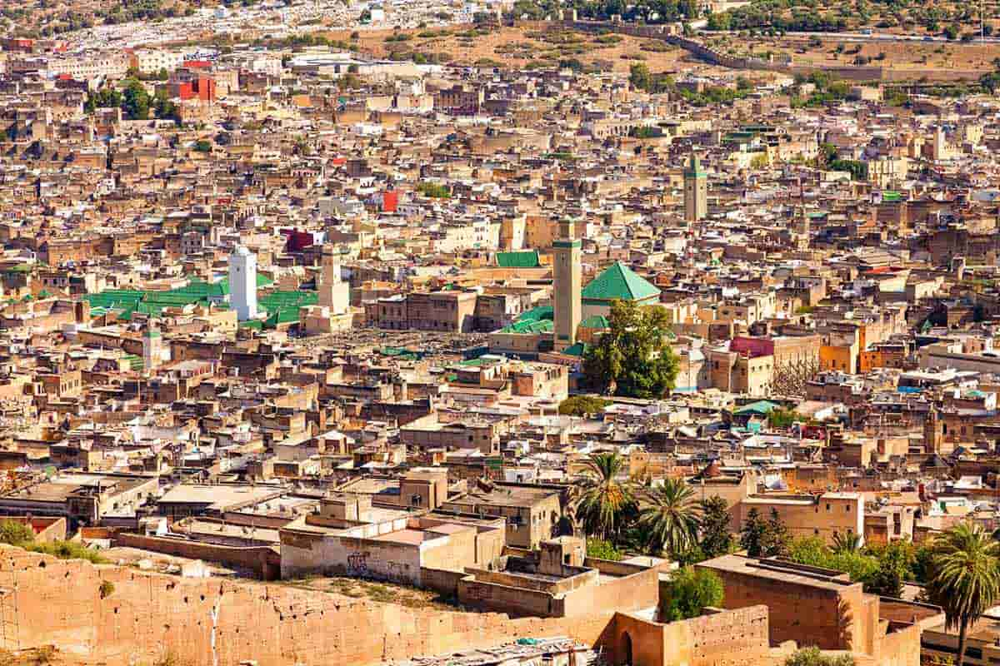
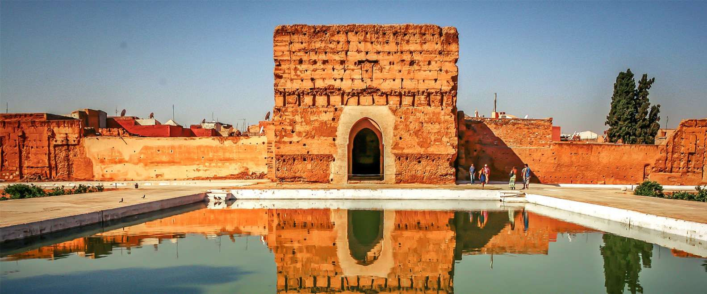

Marruecos - La Puerta al Desierto
Descubre Marruecos
Marruecos, un país fascinante en el norte de África, despierta la imaginación con su cautivadora mezcla de culturas, paisajes sorprendentes y una historia rica que se manifiesta en cada rincón del territorio. Desde las majestuosas montañas del Atlas que se alzan imponentes hasta el cielo, hasta la vastedad inigualable del desierto del Sahara que se extiende hasta donde alcanza la mirada, Marruecos es un lienzo diverso que ofrece una paleta de experiencias únicas, atrayendo a viajeros ávidos de descubrimientos. La diversidad cultural de Marruecos se refleja en sus ciudades vibrantes, donde los zocos bulliciosos revelan tesoros artesanales y los aromas de especias llenan el aire. Desde las estrechas callejuelas laberínticas de la Medina en Marrakech hasta la histórica medina de Fez, cada rincón cuenta una historia que se remonta a siglos de intercambio cultural y coexistencia. Los paisajes de Marruecos son igualmente impactantes y variados. Las cumbres nevadas del Atlas ofrecen vistas panorámicas que quitan el aliento, mientras que los oasis verdes y exuberantes palmerales crean un contraste único con las vastas dunas doradas del Sahara. La costa atlántica, salpicada de encantadores pueblos pesqueros y playas expansivas, agrega otra capa a la diversidad geográfica de este país. La rica historia de Marruecos se despliega en la arquitectura única de sus ciudades imperiales, como la icónica Marrakech y la antigua Meknes. Monumentos como las imponentes puertas de la ciudad, los palacios llenos de mosaicos y los antiguos ksars son testigos silenciosos de las civilizaciones que han dejado su huella en esta tierra histórica.
Atracciones en Marruecos
-
Montañas del Atlas
Las montañas del Atlas ofrecen impresionantes paisajes y oportunidades para practicar senderismo y explorar pueblos bereberes.

-
Desierto del Sahara
El desierto del Sahara es el desierto cálido más grande del mundo y ofrece la oportunidad de experimentar la vida nómada y pasar la noche en un campamento beduino.
 -
Medina de Fez
La Medina de Fez es una de las medinas más antiguas y mejor conservadas del mundo, con calles estrechas, zocos bulliciosos y una rica historia.
 -
Marrakech
Marrakech es una ciudad vibrante y bulliciosa con una plaza central llena de artistas callejeros, vendedores y cafés.

Itinerario
Día 1: Llegada a Marrakech y visita a la Plaza Jemaa el-Fna.
Día 2: Exploración de la Medina de Marrakech y visita a los Jardines Majorelle.
Día 3: Excursión a las montañas del Atlas y visita a pueblos bereberes.
Día 4: Viaje al desierto del Sahara y paseo en camello al campamento beduino.
Día 5: Regreso a Marrakech y visita a los palacios y monumentos de la ciudad.
Costos
Los costos para un viaje de 5 días y 4 noches a Marruecos comienzan en $1000 por persona e incluyen alojamiento, transporte, comidas y actividades. Los costos pueden variar según las fechas de viaje y las preferencias personales.